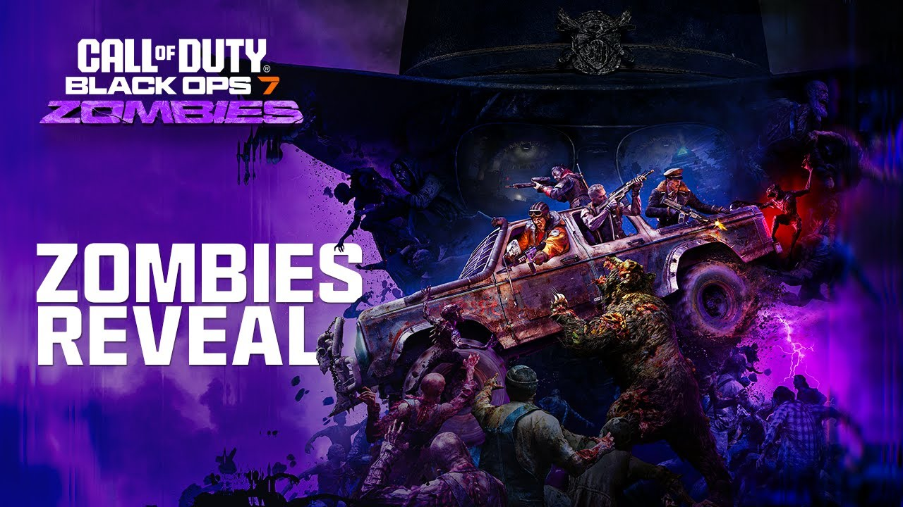

When I first played the zombies game mode from Black Ops 2 and I was kinda bad at it, until i grew a passion for it when I got older. those were the times where I was great at Black Ops Zombies and wanted to complete the Easter Eggs.But little did I know that this would be Very Difficult.
"In the game Black Ops 7 theres a game mode named Zombies, I Really liked it and was want to complete the Main Easter Egg witch was much more difficult due to the challenges it makes you do but for an in game reward if you succeed. The game has special enemy's like Bears, Robots, Crawlers, and many more. it tells a great series but not too many people like it due to the Changes people made to the game making less like the classics. The game has a lot of options and ways to upgrade and build curtain things like perks ,also known as per-a-colas, these help with survival and help the game be easier as you progress through the challenges. This doesn't make it a easy task because the undead heard well be faster and stronger and they will surround you coming from multiple directions all at once. the undead have many ways to surround you and so many challenges are ahead of you when playing the game so I really do recommend this game!"